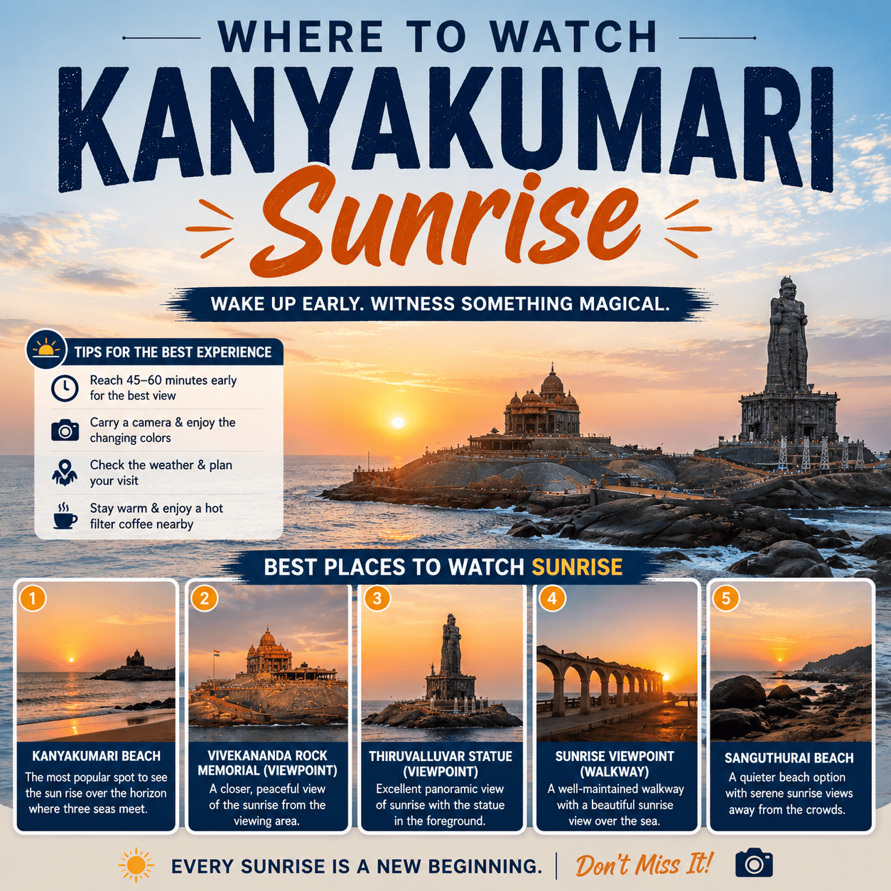
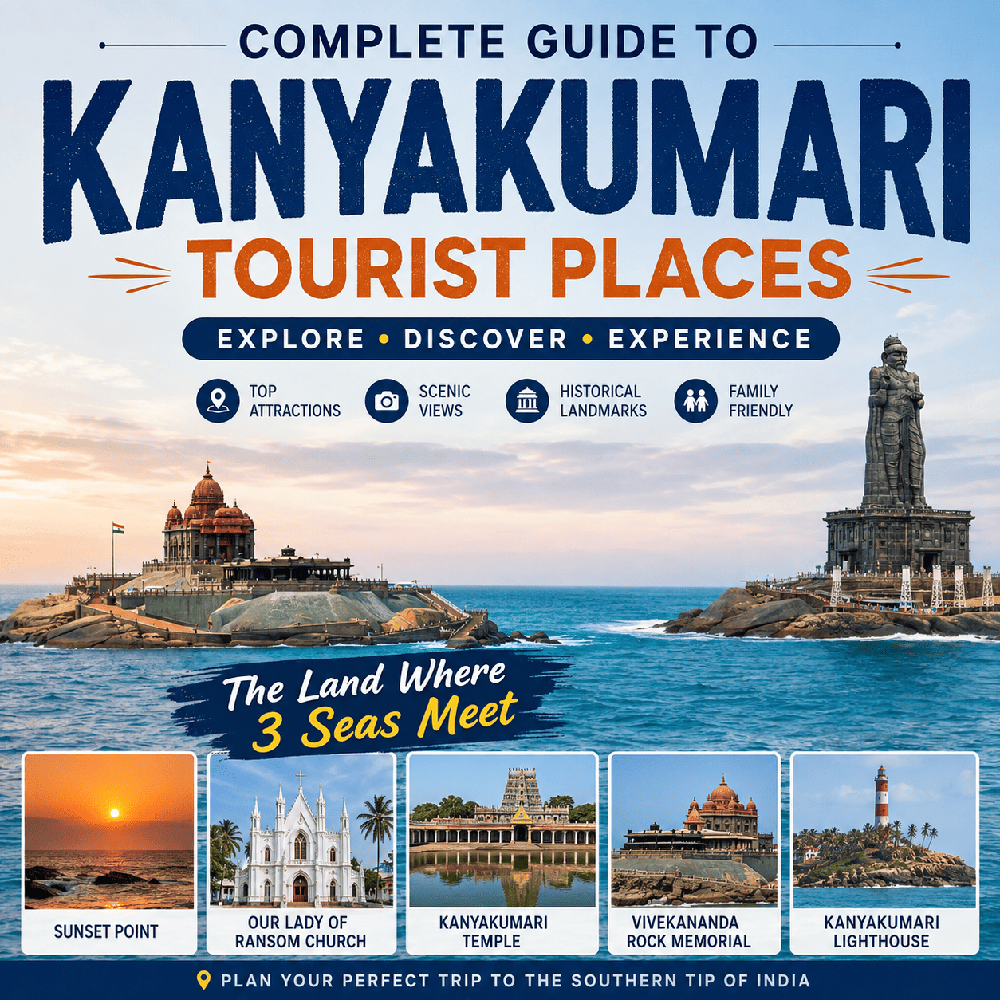
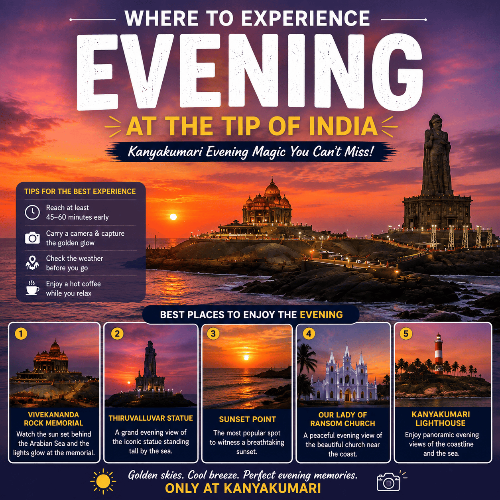
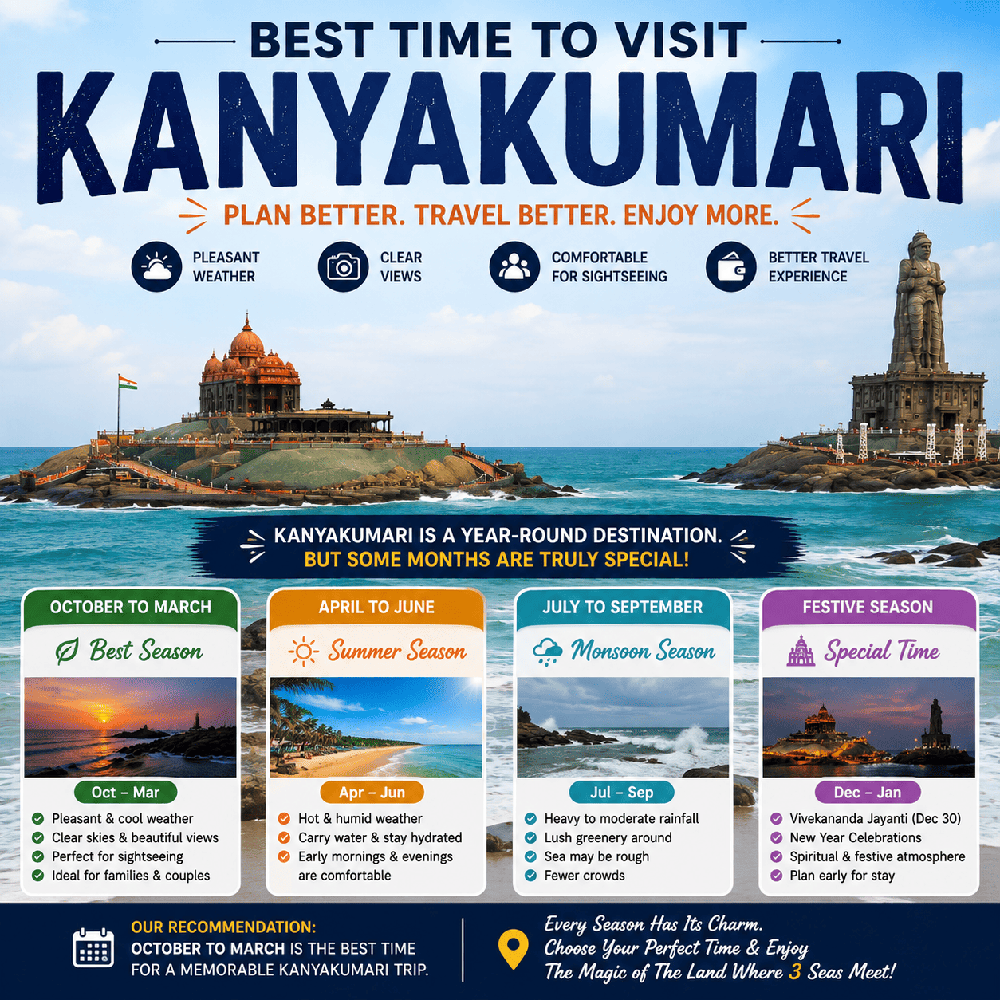
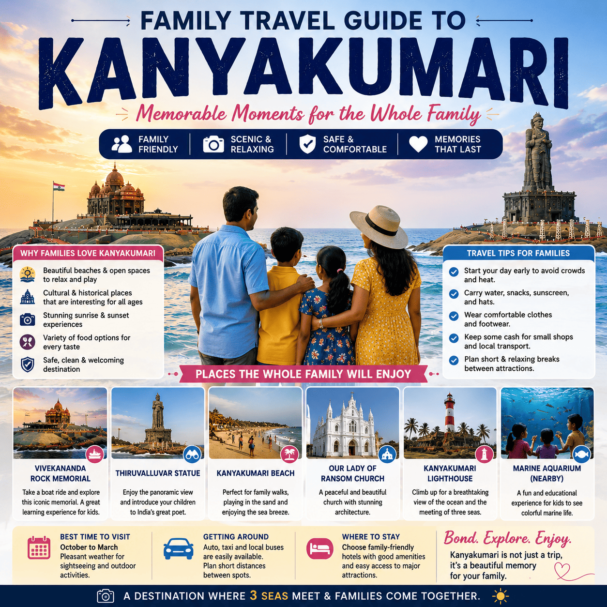
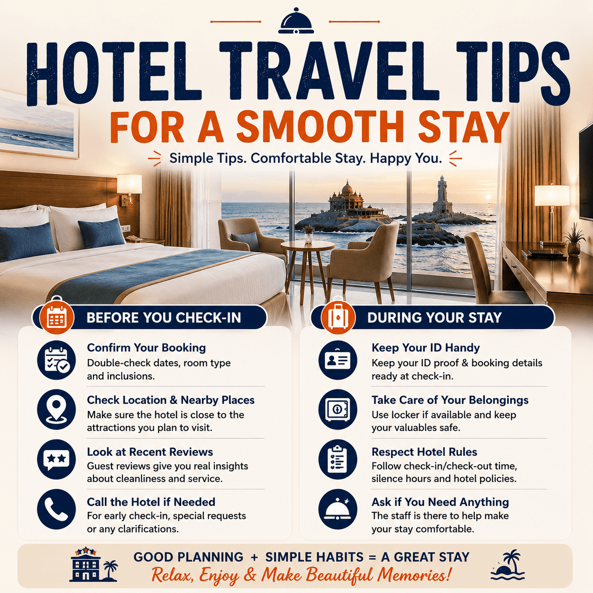
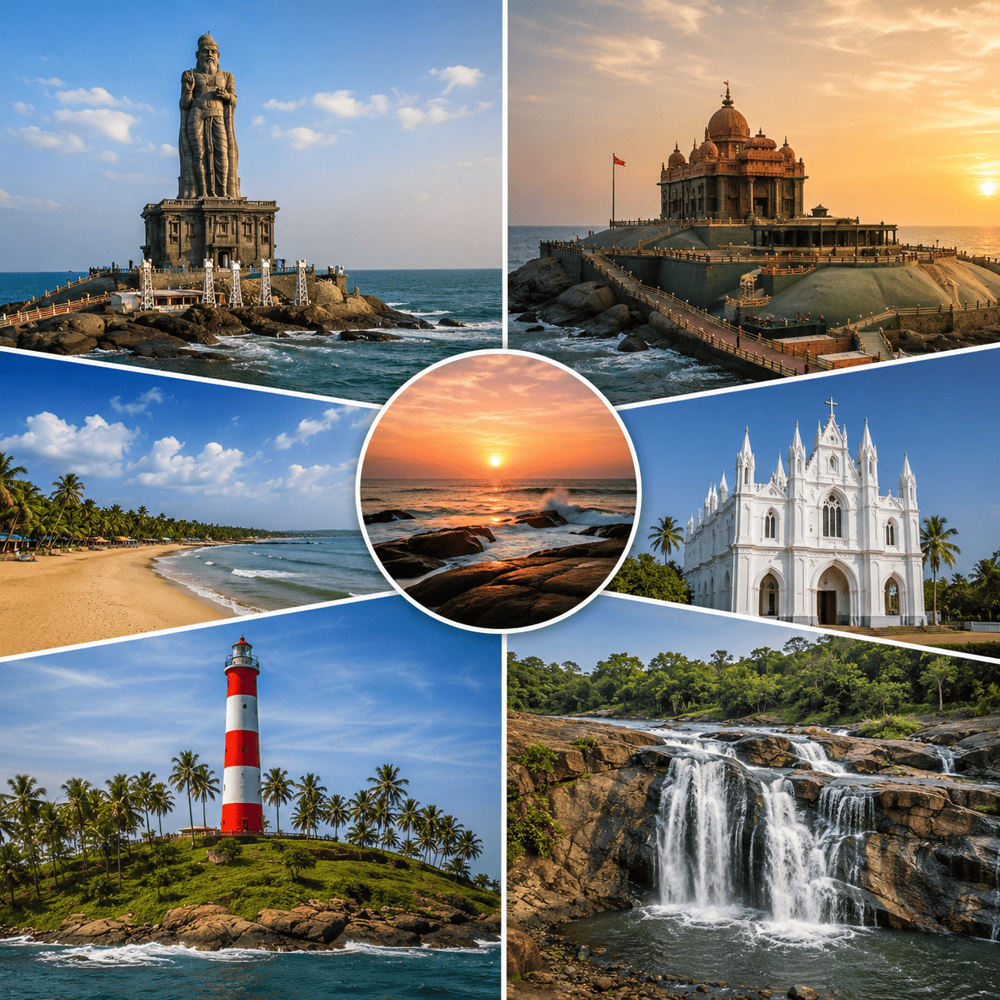
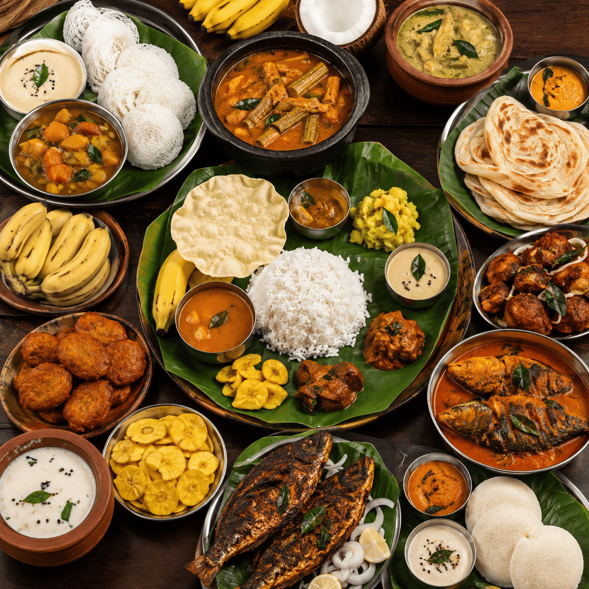

Tourist Guide

Complete Guide to Kanyakumari Tourist Places
Every major landmark near the coast, mapped out for a two-day visit.
The Journal

Every major landmark near the coast, mapped out for a two-day visit.

The quietest viewpoints and the best months for a clear horizon.

Pairing sunset with the Musical Fountain Show for one memorable evening.

Weather patterns, crowd levels and festival dates worth planning around.

Stroller-friendly routes, kid-safe beaches and easy meal stops.

What to pack, when to arrive, and how to make the most of an early check-in.

Vattakottai Fort, Eco Park and other short trips beyond the shoreline.

From filter coffee to fresh seafood — where locals actually eat.